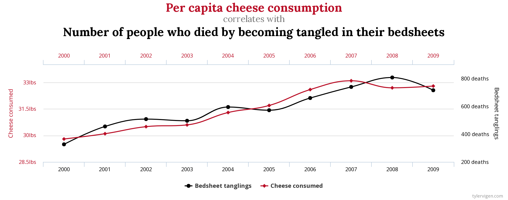
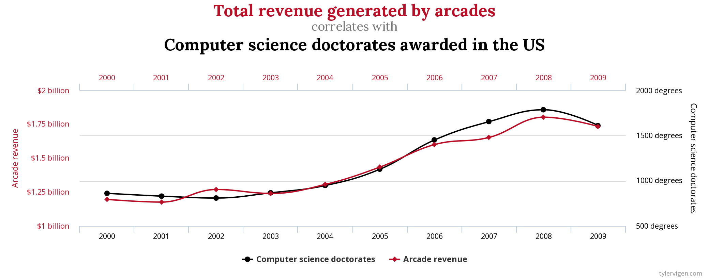

# 1 = Heads, 0 = Tails
rbinom(10, 1, 0.5) [1] 1 1 1 1 1 1 1 1 1 1P-hacking is the introduction of bias into a study or experiment that increases the likelihood of small p-values independent of any “real” correlation between the measured variables and the outcome of interest.
Did you know that the per capita cheese consumption correlates with the number of people who died by becoming tangled in their bed sheets between 1999 and 2009?

Did you know that the total revenue generated by arcades correlates with the number of computer science doctorates awarded in the US between 1999 and 2009?

You can check out these and many other “interesting” results on Tyler Vigen’s website, Spurious correlations. These facts are intriguing until you look a little closer into how he discovered these factoids. He basically took every statistic he could find between 1999 and 2009, from death rates, to consumer trends, to spending, and compared them all with each other. He has found some really entertaining bogus correlations.
When it comes down to it, if you really want to make a case with data, you can hack your way to a story without too much work. Let’s say we want to tell a story about what makes a great data scientist.
It will not take long for us to find a story - perhaps we’ll discover that drinking as few as three extra beers during each full moon will make us better data scientists!
For this part of the lab, we will be using the p-hacker app developed by Felix Schönbrodt.
Number of DV's) will increase your chances of finding something “interesting”.These are great examples of how not to run a study. While these ideas look pretty egregious, it is surprisingly easy to p-hack. Keeping a watchful eye out for p-hacking will save you grief and wasted time!
I have a magic coin. Every time I flip the coin, I get a heads! I’ll prove it to you.
# 1 = Heads, 0 = Tails
rbinom(10, 1, 0.5) [1] 1 1 1 1 1 1 1 1 1 1Don’t believe that it always gives me heads? Let’s try that again:
# 1 = Heads, 0 = Tails
rbinom(10, 1, 0.5) [1] 1 1 1 1 1 1 1 1 1 1And again:
# 1 = Heads, 0 = Tails
rbinom(10, 1, 0.5) [1] 1 1 1 1 1 1 1 1 1 1OK, if you check the code behind this page, you’ll see that I used a specific random seed. It will actually generate 30 “heads” in a row. The probability of that is approximately 9.3^{-10}, but it doesn’t take much work to find one of those special random seeds if you are patient.
Your challenge: Find a random seed that results in at least 10 heads in a row.
Advanced challenge: Create a magic coin shiny app that will allow you to identify a seed that will result in an arbitrary number of heads. I’ve given you starter code here.
Clone your fork to your local machine.
Complete the app.
Push your completed app to GitHub.